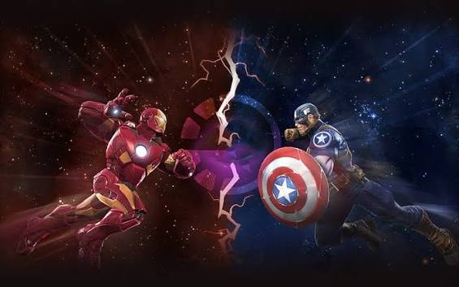

Mapeado Imagenes en HTML5
Cuando hablamos de mapeado en HTML5, nos estamos refiriendo a establecer o localizar zonas
de imágenes para establecer puntos de anclaje que nos llevarán a otras páginas webs o zonas
de nuestros proyectos.
Para ello, utilizaremos la etiqueta map con los siguientes atributos:
- usemap: es un atributo que nos ayuda a indicar en la imagen, que vamos a establer un mapeado.
Se indica con un # y con el nombre que se quiera para el mapeado.
- area: es una etiqueta con apertura y cierre que sirve para especificar una región geométrica del mapa
y el vínculo asociado a esta región.
-
shape: este atributo lo que hace es definir el tipo de área que vamos a establecer. Estas pueden ser
de los siguientes tipos.
- default: Coge por defecto TODA la región de la imagen para mapear.
- rect: Es una región rectangular. Para poder establecer el área rect, necesitamos establecer
un punto X1Y1 y un punto X2Y2 siendo el primer punto el vértice superior izquierdo, y el segundo
el vértice inferior derecho de la imagen.
- circle: Coger un punto central X1Y1, y un valor de radio que nos permitirá establecer
una región circular o de circunferencia de nuestra imagen para mapear.
- poly: Establecer mediante 3 o más puntos una región poligonal que nos permita de
de esta manera poder establecer un área mayor de mapeado.
Importante: para establecer los puntos en este tipo de región, debemos seguir el
sentido de las agujas del reloj.
- coordenadas: indican la posición en pantalla del mapeado y que son valores de la longitud
del mismo
Imagen de mapeado
